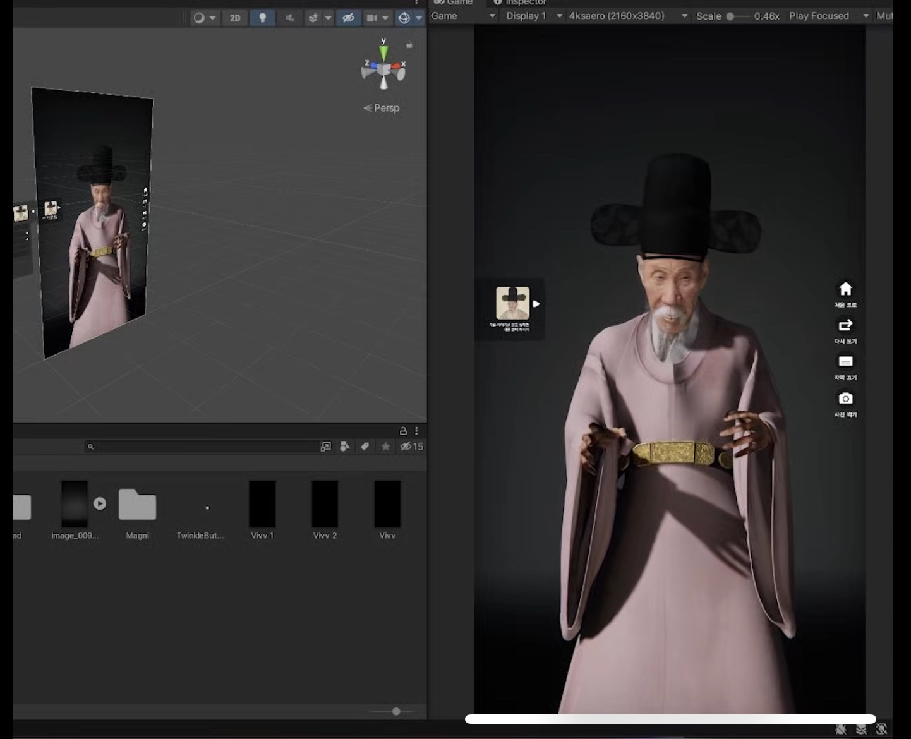
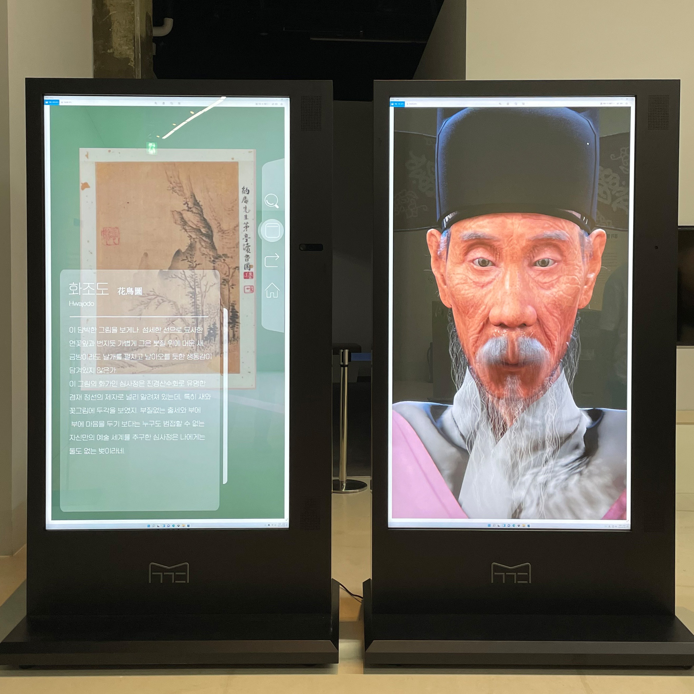
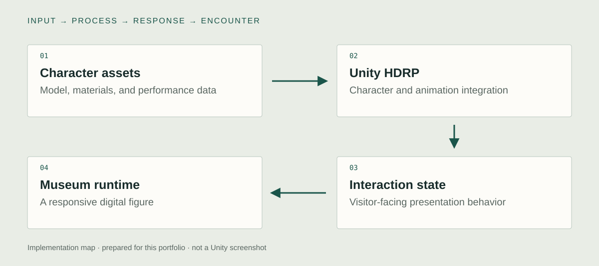

What I built in Unity / existing implementation
Integrate a digital human for a museum encounter.
I brought the digital human into Unity HDRP and integrated character assets, body and facial performance, animation, and museum interaction. The work connects the prepared character to a running presentation rather than stopping at a rendered likeness.
01 / Unity HDRP · character assets · materials
Bring the digital human into Unity HDRP
I integrated the prepared digital human into Unity HDRP. Model, rig, materials, and performance data have to become a running character scene. The technical contribution is the Unity integration and presentation, alongside the upstream character-production work documented in the original archive.
Unity view to capture
- Show
- The character hierarchy, material assignments, lighting, and Game view.
- Demonstrate
- Show the same character in Scene view and the final camera view.

02 / Character animation · facial performance · runtime integration
Coordinate body and facial performance
I brought body and facial performance into the character's Unity presentation. Animation assets and the logic that selects or presents them are distinct parts of the system. A close capture of the actual animation-control component would make the transition from prepared performance to runtime behavior directly inspectable.
Unity view to capture
- Show
- The actual animation-control setup, imported clips or performance data, and facial controls.
- Demonstrate
- Trigger one implemented performance and show the character's body and face during playback.
03 / Visitor-facing controls · scene behavior · deployed display
Integrate the character with museum interaction
I connected the real-time character to the museum presentation and its visitor-facing interaction. Existing Unity and installation images document this movement from an engine scene to an installed system. This is the Unity digital-human case. The Unreal/MetaHuman production in Shininho and Jooan is separate.
Unity view to capture
- Show
- The actual interaction trigger and the scene response used by the museum application.
- Demonstrate
- Record a visitor-facing action, its Unity response, and the installed screen in one sequence.

Technical structure & design decisions
How the parts connect.

- 01Character assets
Model, materials, and performance data
- 02Unity HDRP
Character and animation integration
- 03Interaction state
Visitor-facing presentation behavior
- 04Museum runtime
A responsive digital figure
From asset to runtime
A character model, animation clips, facial performance, and materials are separate production elements. The Unity integration makes them behave as one presented figure.
Animation within an encounter
The character's performance needs to belong to the interaction state. The technical case is the coordination between prepared performance and runtime presentation, supported by existing Unity and installation images.
The conceptual starting point
What changes when a historical representation can move, speak, and share an encounter with a visitor?
Gang Se-hwang is known through historical images and records. A responsive character adds movement and temporal presence to those references. The installation therefore asks how an interpretation of a historical person becomes legible as a visitor-facing digital guide.
Pre-production & development logic
From intent to interaction.
A retrospective design note based on the documented work. Newly prepared for this portfolio.
- 01
Anchor the representation
Use historical visual references to establish what the digital figure needs to communicate.
- 02
Plan the performance pipeline
Separate source assets and recorded performance from Unity-side playback and interaction logic.
- 03
Inspect the final encounter
Judge the character in the actual visitor-facing presentation, including transition into and out of an interaction.
A possible research extension
Proposed comparison
How does responsive animation change the perceived presence of a historical digital figure?
The relation between visitor input and character performance.
Character model, dialogue material, display, and scene.
This is a proposed study direction motivated by the artwork. No controlled study or measured effect is reported for this comparison.
Evidence & implementation scope
What can be inspected.
This is Unity HDRP work. Shininho and Jooan's Unreal / MetaHuman production remains separate. Older venue-name differences are not resolved by guessing.
Technical captures to add
- Show the character rig, Animator or actual animation-control system, and one interaction-triggered transition in Unity.
- Connect that Editor capture to the installed kiosk or display. Label source performance assets separately from runtime logic.
Existing project images, illustrative references, and new source examples are labeled separately. Original source, a current executable, and measured performance remain separate evidence items.